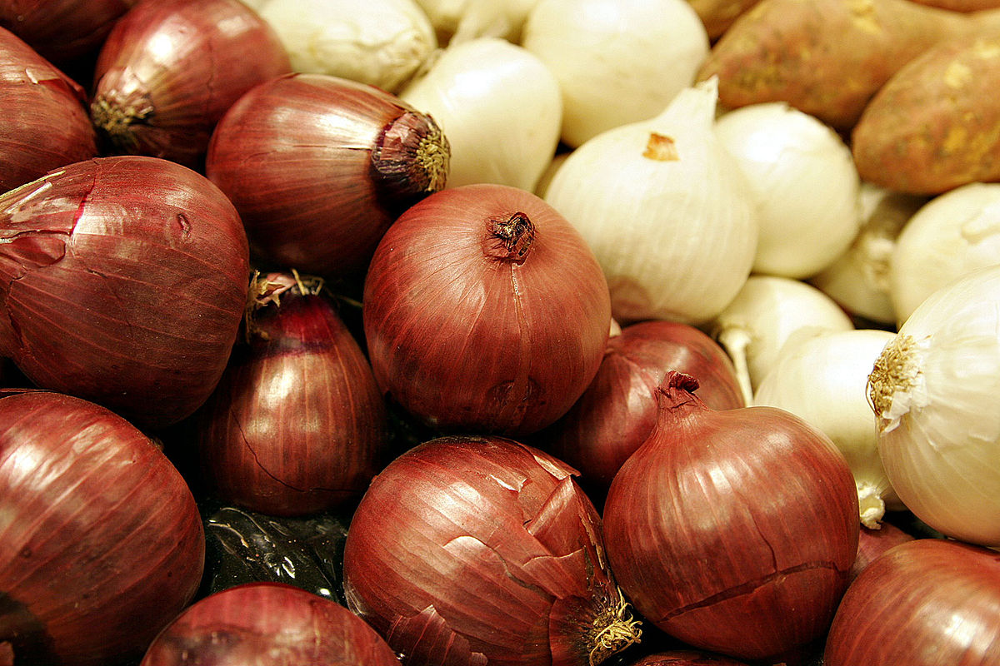

Cebollita | Qué variedad utilizar en las recetas?
Kiko Palomares, Dic. 1, 2023
Una variedad de cebolla para cada ocasión. Para cada plato hay un tipo particular de cebolla que puede realizar los sabores. Vamos a ver cómo se elige la correcta para todas las recetas. Protagonistas de la cocina italiana e internacional, las cebollas desempeñan un papel fundamental.
Leer más